A doença de Paget é classificada em mamária e extramamária. A mamária apresenta-se como lesão eritematodescamativa, acometendo papila e aréola do mamilo. A extramamária é considerada um adenocarcinoma originado da pele ou dos apêndices cutâneos em áreas de glândulas apócrinas.
Epidemiologia
A doença de Paget mamária acomete mais o sexo feminino, com idade média de diagnóstico aos 55 anos. No sexo masculino, a doença é extremamente rara. Alguns dados epidemiológicos sugerem que a incidência está diminuindo ao longo do tempo, tendo reduzido 45% entre 1988 e 2002.
A doença de Paget extramamária é uma condição rara, aparecendo em indivíduos com idade entre 50 e 60 anos. As mulheres são mais comumente afetadas do que os homens, na proporção 3:1. É vista com mais frequência em brancos, sendo rara na população negra.
Fisiopatologia
Há duas teorias para a doença de Paget mamária: a teoria epidermotrópica, a mais amplamente aceita, e a teoria da transformação. Na primeira, a célula de Paget surge de um adenocarcinoma mamário subjacente, com as células epiteliais ductais neoplásicas migrando através do sistema ductal da mama para a epiderme do mamilo. Em contraste, a teoria da transformação propõe que a célula de Paget é um queratinócito maligno transformado, sugerindo que a doença de Paget mamária seja um carcinoma epidérmico in situ independente. A marca histológica é a presença de células de adenocarcinoma maligno e intra-epitelial (células de Paget) que ocorrem isoladamente ou em pequenos grupos dentro da epiderme do mamilo. As células são geralmente grandes, com citoplasma claro e núcleos grandes. A imuno-histoquímica também pode ser útil em casos com diagnóstico difícil. O painel diagnóstico útil de imuno-histoquímica para biópsia de mamilo sem câncer invasivo subjacente ou carcinoma ductal in situ pode incluir CK7, CK20, CEA (monoclonal), ER, HER2 e MART-1 ou HMB-45 se o melanoma também estiver no diagnóstico diferencial.
A doença de Paget extramamária surge como adenocarcinoma cutâneo primário na maioria dos casos. A epiderme se infiltra com células neoplásicas com diferenciação glandular. As células tumorais podem ser originárias de ductos das glândulas apócrinas ou de células estaminais queratinocíticas.
Manifestações Clínicas
A característica da doença de Paget mamária é uma lesão escamosa, vesicular ou ulcerada crônica que se inicia no mamilo e depois acomete aréola e pele areolar adjacente. Geralmente, é unilateral e mede entre 3 mm a 15 cm de diâmetro. A retração do mamilo é um achado raro. Ocasionalmente, uma descarga sanguinolenta está presente. A dor, queimação ou prurido estão associados e podem estar presentes antes do desenvolvimento de doença clinicamente evidente. A duração média dos sinais e sintomas antes do diagnóstico histológico é de 6-8meses.
Os pacientes com doença de Paget extramamária geralmente apresentam lesões eczematosas crônicas na virilha, órgãos genitais, períneo ou região perianal. O sintoma mais comum é o prurido intenso, podendo ocorrer dor e hemorragia em lesões prolongadas. Inicialmente, observa-se apenas um ligeiro eritema. O prurido geralmente leva a escoriações e liquenificação proeminentes. Além do prurido, os pacientes podem descrever uma sensação de queimação ou dor na área envolvida.
Diagnóstico
A suspeita do diagnóstico visa identificar e estabelecer o diagnóstico de câncer de mama subjacente. Um câncer de mama subjacente (in situ ou invasivo) está presente em 85% dos casos, embora, muitas vezes, sem nodulações ou anormalidades mamográficas associadas. A consulta precoce e uma biópsia da lesão no mamilo ou área areolar são necessárias para o diagnóstico preciso. A história deve ser detalhada, interrogando o tempo de evolução da lesão e sintomas associados, incluindo dor, descarga papilar, sangramentos, queimação e prurido. É importante questionar o risco individual para câncer de mama. O exame bilateral da mama deve ser realizado, buscando anormalidades associadas.
A possibilidade de Paget extramamária deve ser considerada em qualquer paciente com dermatite crônica da virilha, vulva ou região perianal. No exame clínico, pode aparecer intertrigo crônico, eczema, que geralmente estavam presentes há anos antes da biópsia ser realizada para confirmar o diagnóstico. No sexo masculino, as áreas mais envolvidas são a peniana e escrotal. Já no sexo feminino, a vulva é mais acometida.
Diagnóstico Diferencial
Inclui etiologias benignas (eczema, dermatite de contato, dermatite de radiação, adenoma de mamilo) e malignas (doença de Bowen – carcinoma escamoso da epiderme-, carcinoma basocelular, melanoma). Dado o diagnóstico diferencial, um teste terapêutico com esteroides tópicos é frequentemente considerado, na suspeita de eczema ou dermatite. Porém, a melhora parcial nas alterações eczematosas pode ocorrer mesmo na presença de Paget mamária. Por isso, diante de qualquer anormalidade persistente no mamilo, a biópsia deve ser realizada. O diagnóstico diferencial de Paget extramamária inclui carcinoma de células escamosas, condiloma acuminado, hidradenite supurativa, carcinoma basocelular, Doença de Bowen, candidíase cutânea, intertrigo, dermatite de contato por irritante, Tinea Cruris.
Tratamento
O aspecto da apresentação que influencia a decisão do tratamento é a presença ou ausência de massa mamária ipsilateral palpável ou anormalidade mamográfica. O prognóstico da doença de Paget mamária baseia-se no câncer de mama subjacente e o tratamento deve ser guiado pelo estágio do tumor. A mastectomia (radical ou modificada) e ressecção dos linfonodos axilares são terapias adequadas para pacientes com massa palpável e carcinoma de mama invasivo subjacente. O tratamento conservador inclui excisão local do mamilo, segmentectomia e radioterapia. Porém, a segmentectomia não é suficiente para pacientes com doença limitada ao mamilo. Por isso, recomenda-se uma grande excisão abordando linfonodos axilares para pacientes com ou sem massa clínica. A radioterapia sozinha nem sempre controla o câncer de mama subjacente, mas pode ser usada para pacientes que se recusam a mastectomia ou naqueles que não estão aptos para o tratamento cirúrgico.
A doença de Paget extramamária se estende além das margens visivelmente envolvidas, por isso, a excisão cirúrgica com margem de segurança da epiderme envolvida é o tratamento mais efetivo. Na doença extramamária, atualmente, as opções de excisão recomendadas são: excisão radical com margens de 5 cm ou a cirurgia micrográfica de Mohs. A cirurgia micrográfica de Mohs oferece taxas de recorrência mais baixas após a excisão de tumores primários, com menor margem de segurança. O tempo médio de recorrência é em torno de 2,5 anos. Estudos com terapia fotodinâmica foram feitos, no entanto, alcançou apenas resultados paliativos. O creme de imiquimode a 5%, creme de 5-fluorouracil a 5%, laser de CO2 e a associação de duas ou mais abordagens terapêuticas também podem ser usadas com resultados variáveis. Já que as recorrências são muito comuns com qualquer uma das opções terapêuticas disponíveis, é obrigatório monitorar os pacientes por longos períodos.
REFERÊNCIAS BIBLIOGRÁFICAS
1. Mammary and extramammary Paget's disease. Lopes Filho LL, Lopes IM, Lopes LR, Enokihara MM, Michalany AO, Matsunaga N. An Bras Dermatol. 2015 Mar-Apr;90(2):225-31.
2. Local recurrence of mammary Paget's disease after nipple-sparing mastectomy and implant breast reconstruction: a case report and literature review. Pu Q, Zhao Q, Gao D. World J Surg Oncol. 2022 Sep 6;20(1):285.
3. Melanoma Mimicker: Pigmented Mammary Paget Disease in a Man. Kenny MG, Nguyen M, Modi M, Eilers D, Souchik A. Am J Dermatopathol. 2024 Jan 1;46(1):46-49.
4. Paget Disease of the Breast in Pregnancy and Lactation. Gilmore R, Prasath V, Habibi M.. Adv Exp Med Biol. 2020;1252:133-136.
5. Breast-Conserving Surgery in Patients With Mammary Paget's Disease. Yao Y, Sun L, Meng Y, Zhuang Y, Zhao L, Yu Q, Si C. J Surg Res. 2019 Sep;241:178-187.
Atlas de imagens 15

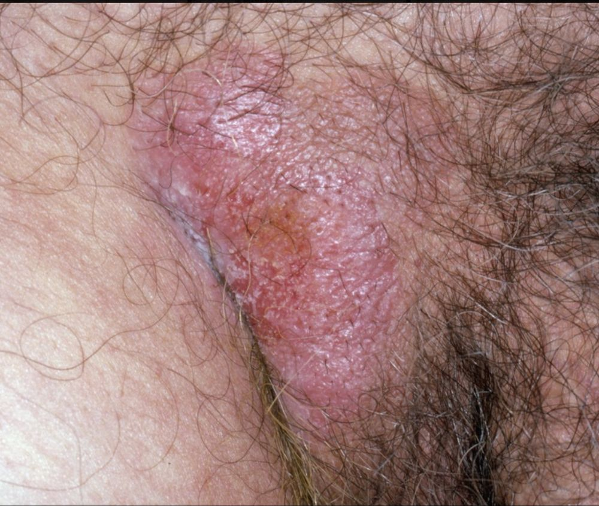

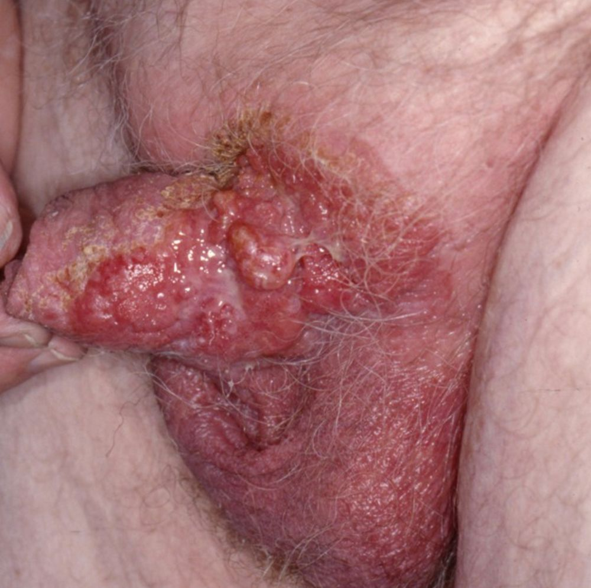

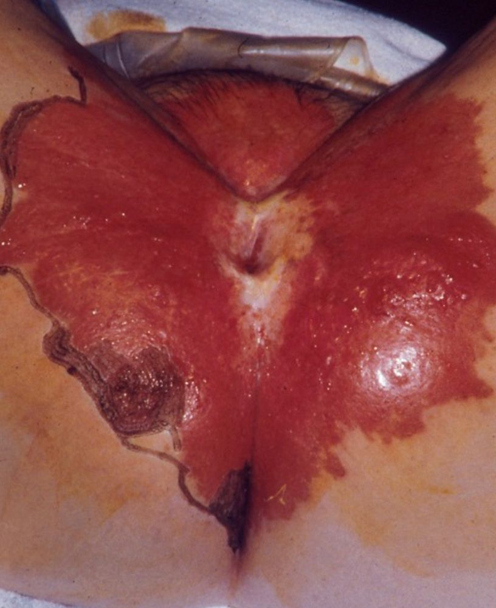

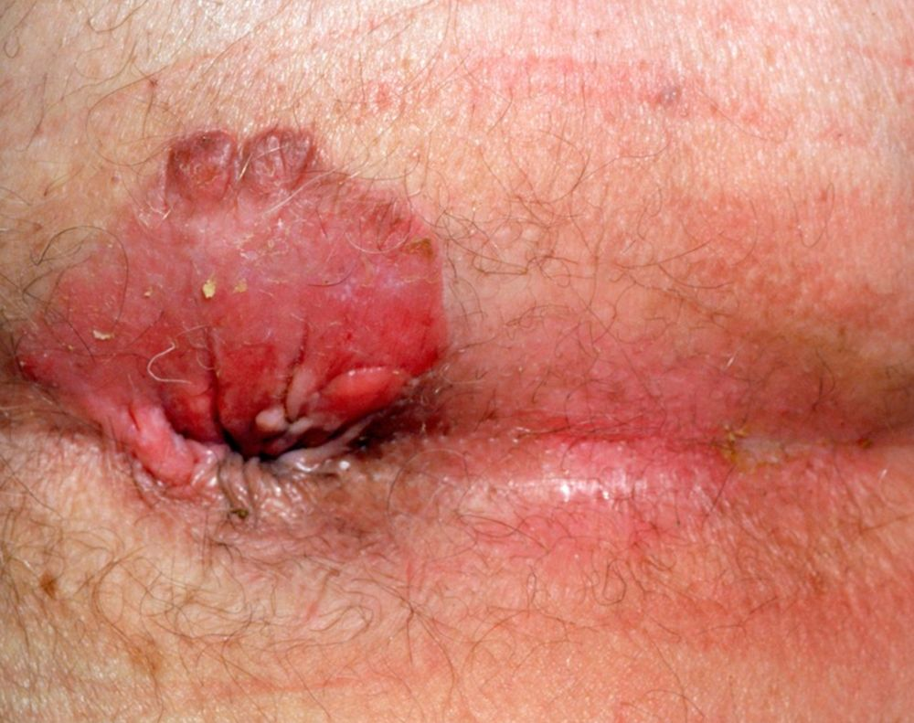

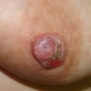

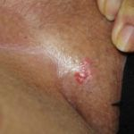

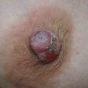

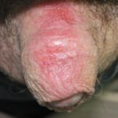


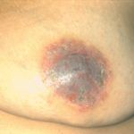


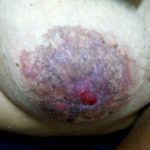

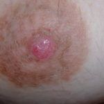

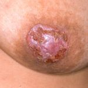

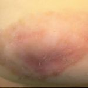
Na Skin Prime
Como podemos ajudar
Entre os recursos citados para Doença de Paget, estes estão disponíveis na clínica:
Tratamentos
Diagnóstico